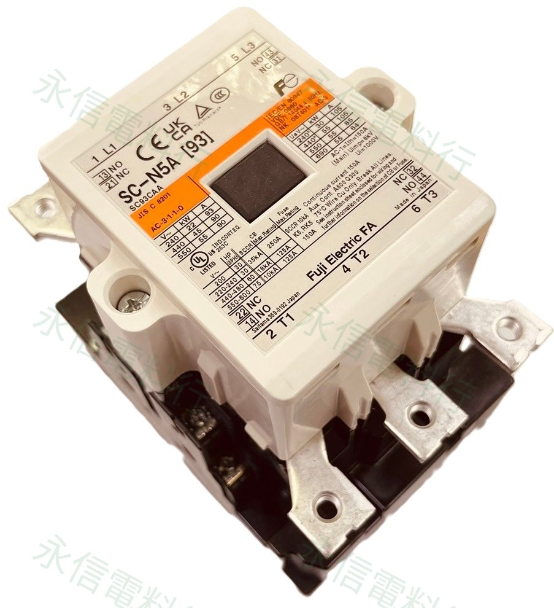

本頁商品照片已套用永信電料行低干擾浮水印；點選縮圖可切換照片。
 富士電機 FUJI ELECTRIC
富士電機 FUJI ELECTRIC電磁接觸器｜NEO SC
SC-N5A AC220V
SC-N5A AC220V 為本批富士電機商品之一。網站依完整型號、實物照片／標示與富士官方系列資料整理，特別保留字母與數字的原始排列順序，避免舊、新世代型號混淆。
完整型號SC-N5A
產品類型電磁接觸器
控制／線圈AC220V
接點／組合2a2b（2NO+2NC）
商品標示105A 標示
型號／線圈核對提醒
富士舊型與新型常有非常接近的命名，例如 SC-1N 與 SC-N1；這些不是同一型號。線圈部分也不能只看「110V／220V」，還要確認 AC／DC、頻率、是否為電子控制式 SUPER MAGNET，以及完整尾碼。
本網站不顯示即時庫存、價格與交期；實際供應狀況請依完整型號另行確認。
完整型號與世代辨識
SC-N5A 的 A 屬於完整型號，不能省略成 SC-N5；AC110V 與 AC220V 版本亦須分開核對。
- 完整型號優先：連字號、字母與數字排列順序都屬於型號本體。
- 舊／新型不可混寫：外觀、框架或額定接近，不代表接點、線圈、附件與安裝完全相同。
- 替代前再核對：若是舊機維修，請提供原件正面、側面、線圈標籤及控制盤接線照片。
詳細規格
品牌富士電機 FUJI ELECTRIC
完整型號SC-N5A
產品類型電磁接觸器
控制／線圈規格AC220V
接點／組合2a2b（2NO+2NC）
商品／銘牌標示105A 標示
線圈驅動架構固定額定 AC 電磁線圈；SC-N5A 不採 SUPER MAGNET
世代／辨識NEO SC
替代核對重點完整型號字母／數字順序、線圈電壓與架構、接點、容量、附件、安裝尺寸
系列共通資料只用於說明線圈架構與世代辨識，不以相近型號推定本件未標示的容量、功耗、動作時間或直接替代關係。
線圈與控制架構注意事項
富士官方說明標準 SC-N1～SC-N5A 不採用 SUPER MAGNET；因此本頁不可與 SC-N6 以上的電子控制式 AC/DC 兼用線圈混為一談。
接觸器線圈不能只看電壓
ABB AF、Siemens SIRIUS 與 Fuji SC 系列的線圈／控制架構並不完全相同；即使標示相近電壓，也不能直接推定可互換。
閱讀線圈架構技術文章 →原廠資料核對
- Fuji Electric｜SC／SW 標準型接觸器與起動器：SC-N6 以上 SUPER MAGNET；SC-N1～SC-N5A 標準型不採 SUPER MAGNET
- Fuji Electric｜SC-NEXT 新舊型比較：可核對舊型與新系列的尺寸、接點、性能差異；不等同直接替換保證
- Fuji Electric｜接觸器世代更新資料：官方時間軸分列 SC-1N／SC-N1 與 SW-1N／SW-N1
詢價與替換建議提供
01
完整型號
包含字母、數字、連字號與尾碼，不重新排序。
02
線圈標籤
拍攝 AC／DC、電壓範圍與 50／60Hz 等完整標示。
03
接點與附件
提供 NO／NC、熱繼電器、輔助接點及實際接線。
04
設備用途
說明馬達、機台、OEM 設備及需求數量。